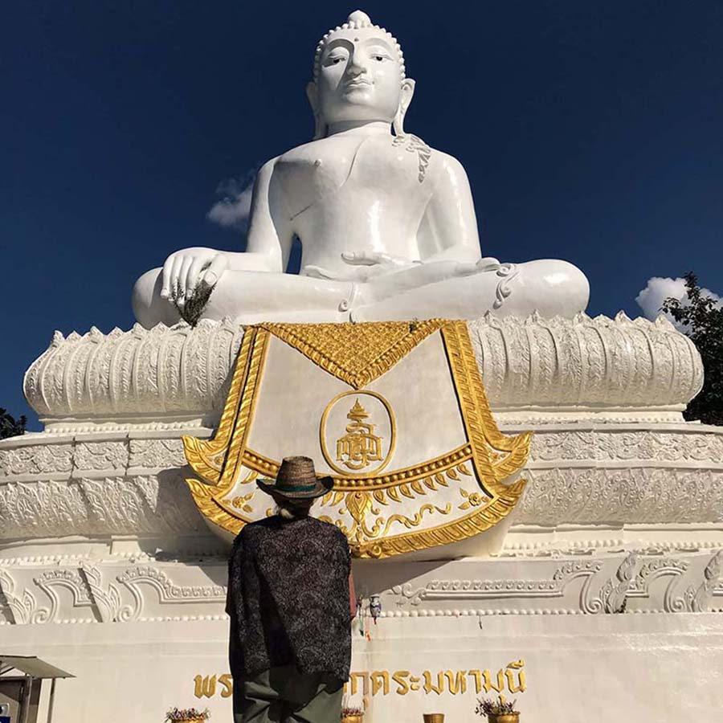
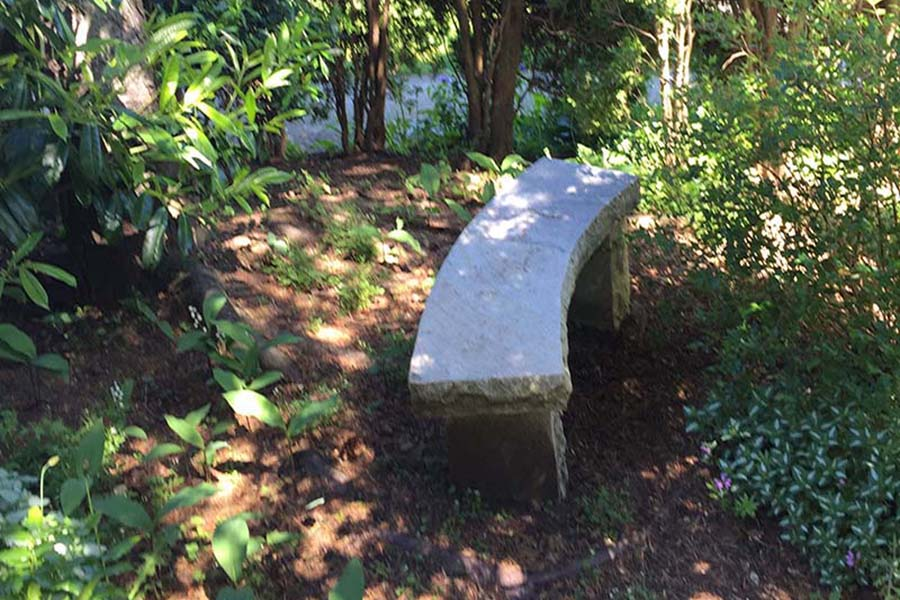

Death comes to us all. It scares us, intrigues us, angers us and we question the why of it. I am not a ghoul who enjoys talking about this subject and I am just another human who shares the same fears. But one thing I feel passionate about in my years as an energy practitioner listening to stories of how it all went wrong for my client's families and friends, is I want to help people take back their power over their last and final act on this earth. So questions must be asked and answers should be given.
Would you want anything and everything done in order to stay alive? Would it depend on your state of mind and body? If suffering
a chronic illness would you want to know every detail about your prognosis? Or would you rather leave all that to your family to
deal with? Are you terrified of death or do you see it as merely a portal - a transition - to another plane, and you welcome the
adventure? Or you feel a little bit of both?
Would you want to be told if your doctors know that you will soon be facing death or would you rather hang on to not knowing?
Would you accept any and all medications even if they make you too drowsy to communicate with your family? Or would you rather
suffer some pain in order to still maintain some awareness and cognition?
Would you be willing to try different types of
alternative medical interventions? Or would you absolutely not want anything outside the medically approved box? And would you
prefer to die in a hospital, a hospice, a care home or in your own home?
Are you the type of person who wants family all around you or do you find being alone or perhaps with just one other family
member to be sufficient? Are there people in your family or friend group that you would absolutely not want at your
bedside?
Do you want to keep your diagnosis a secret - something only you and your spouse know about or would you want everyone
to know so that they could offer their support? Are there one or two family members you would want to be your go-to persons
so that family bickering is kept to a minimum?
Do you want your religious mentors to be present? Or even though you may not have followed a religion would you still take
comfort in the reading of scriptures or other religious texts? Are you
vehemently opposed to having any kind of religion involved?
Think about the setting of your last moments; do you want music, do you want grand-children in the room, do you want to be able to see the outdoors from your window? Are there smells that are offensive to you, are there flowers you loathe, do you like incense or can not tolerate it? Are you afraid of hospitals and doctors as many are? Do you hate being touched or if you do like human contact what kind of touch do you like? Would you feel safe enough to talk about your belief in the afterlife, to express freely any visions you might see?
Do you want a traditional burial, a
cremation or a green burial? Would you want a funeral or just a big party or nothing at all?
Life
never goes according to schedule and in a health care emergency your voice may be drowned out, so put your wishes in writing.It's
not the stuff we want to think about but it's as vitally relevant as any other life decisions we have made. You don't have
to be a helpless victim dependent on the mercy of others. BUT - you do have to write ... your wishes ... down.

Go through our list of 30 questions to get your thinking in depth about the care you would like to receive (and the care you would not) by running our {{ pathObject.parent_name }} > {{ pathObject.child1_name }} wizard. No data is saved and you can run through it as many times as you like. Once you feel good about your answers, print it and store it along with your other important papers.
